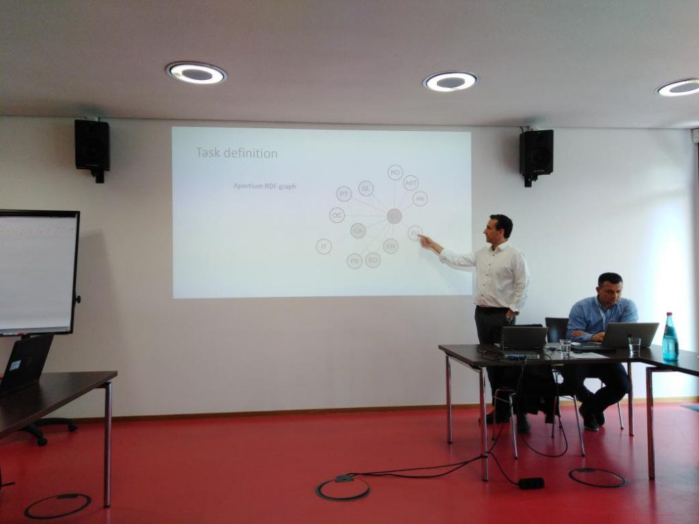

On last May, Prêt-à-LLOD supported the 2nd shared task for Translation Inference Across Dictionaries (TIAD 2019), aimed at exploring methods and techniques for automatically generating new bilingual (and multilingual) dictionaries from existing ones. The techniques that the participants showed there are of high interest for linking lexical data across languages in the LLOD cloud, which is one of the targets of the Prêt-à-LLOD project. The organisers plan to publish the proceedings soon, so stay tuned!